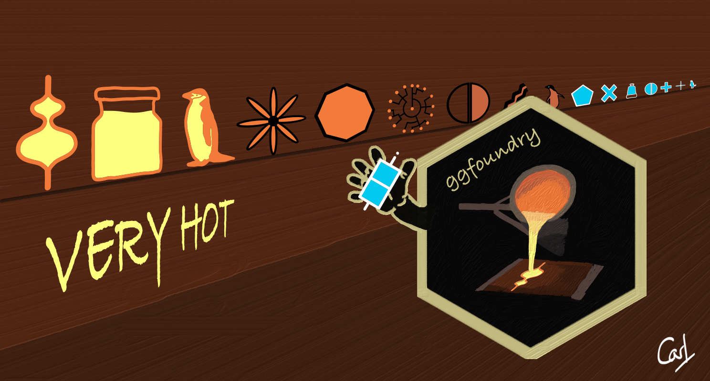

Projects
Toolbox
Blog
Packages
ggfoundry
usedthese
About
Source Code
Report a Bug
Blog
A few brief notes along the way
Categories
All
(7)
R
(7)
blogdown
(2)
hugo
(2)
package
(3)
quarto
(2)
special effects
(1)
website
(4)
ggfoundry 0.3.1
6 min
Leafier and leaner
Jul 7, 2024

ggfoundry
3 min
A new package casting fillable shapes for ‘ggplot2’
Jun 17, 2024
Usedthese
3 min
Hexcited to unveil
usedthese
: an R package that tells you what you just did in case you can’t recall!
Jan 22, 2023
Night Mode
3 min
Making full use of Quarto and sprucing up an oft-visited 404 page
Nov 22, 2022
Painting Tails
3 min
If you’re a cat, go find the nearest open pot of paint. But if you’re a data scientist, what to do?
Apr 26, 2022
A Fresh Lick of Paint
6 min
Staying in Blogdown and renovating with the Hugo Apéro theme
Apr 9, 2022
Moving House
4 min
Leaving Wordpress for a quieter life in Blogdown with the Hugo Academic theme
Jul 26, 2020
No matching items